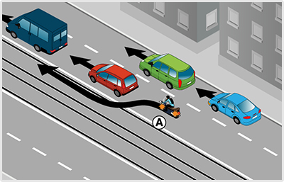

- 623. Szabad-e ráhajtani más járművel a villamospályára, ha a látási viszonyok akadályozzák a közeledő villamos kellő távolságból való észlelését? #703537
- Nem.
- Igen, ha a villamost nem zavarja.
- Igen, ha a villamost nem akadályozza.
- 624. Szabad-e folyamatosan haladni más járművel a villamospályán, ha a látási viszonyok akadályozzák a közeledő villamos kellő távolságból való észlelésében? #703539
- Nem.
- Igen, ha a villamost nem zavarja.
- Igen, ha a villamost nem akadályozza.
- 625. Szabad-e előzni a villamospályán, ha a látási viszonyok akadályozzák a közeledő villamos kellő távolságból való észlelésében? #703540
- Nem.
- Igen, ha a villamost nem zavarja.
- Igen, ha a villamost nem akadályozza.
- 626. Szabad-e ráhajtani az ellentétes irányú villamosforgalom részére szolgáló villamosvágányra? #703541
- A bekanyarodás és a megfordulás esetét kivéve nem.
- Igen, előzési szándékkal.
- Igen, kikerülési szándékkal.
- 627. Forgalmi sávnak minősül-e az úttest villamospálya által elfoglalt része a párhuzamos közlekedésre vonatkozó szabályok alkalmazása szempontjából? #703542
- Általában nem.
- Igen, minden esetben.
- Sosem.
- 628. Forgalmi sávnak minősül-e az úttest villamospálya által elfoglalt része a párhuzamos közlekedésre vonatkozó szabályok alkalmazása szempontjából? #703543
- Igen, ha útburkolati jel a villamospályára vezeti az egyéb járművek forgalmát.
- Igen, minden esetben.
- Sosem.
- 629. Melyik járműnek van elsőbbsége a menetirányt változtató villamos és az egyenesen haladó más jármű forgalmi viszonyában? #703571
- Az egyenesen haladó (menetirányt nem változtató) járműnek.
- Minden esetben a villamosnak.
- 630. Melyik járműnek van elsőbbsége útkereszteződésben az azonos irányból érkező villamos és más jármű viszonyában? #703573
- Az egyenesen haladó járműnek a vele azonos irányból érkező és bekanyarodó járművel szemben elsőbbsége van (ide nem értve a kanyarodó főútvonal esetét).
- Amikor villamos és más jármű útkereszteződésben találkoznak, mindig a villamosnak van elsőbbsége.
- 631. Párhuzamos közlekedésre alkalmas úttesten, középen elhelyezett villamosvágányok esetén szabad-e más járművel előzés céljából a villamosvágányra hajtani? #703574
- Igen, ha a forgalmi sávokat útburkolati jelekkel nem jelölték (ide nem értve az ellentétes irányú villamosforgalom részére szolgáló villamosvágányt).
- A villamosforgalom részére szolgáló villamosvágányokra sosem szabad ráhajtani.
- Igen, ha a forgalmi sávokat útburkolati jelekkel jelölték.

- 632. Ön a kormánnyal jelzett motorkerékpárt vezeti. Megelőzheti-e az Ön előtt haladókat a villamospálya igénybevételével? #723670
- Nem.
- Igen, de csak akkor, ha nem érkezik villamos.
- Igen, de csak az azonos irányú villamosvágányok igénybevételével.

- 633. Ön az ’A’ jelű motorkerékpárt vezeti. Megelőzheti-e az Ön előtt haladókat a villamospálya igénybevételével? #723932
- Nem.
- Csak akkor, ha nem érkezik villamos.
- Csak az azonos irányú villamosvágányok igénybevételével.